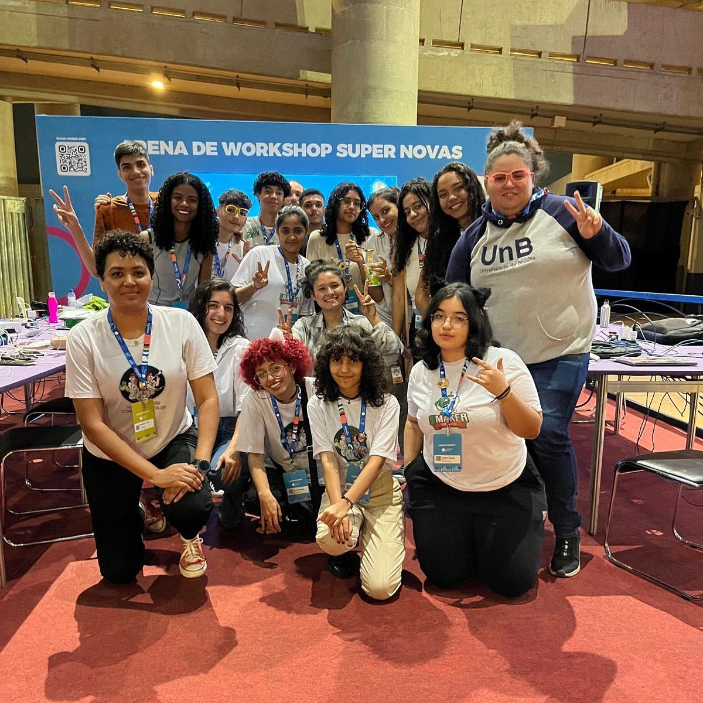
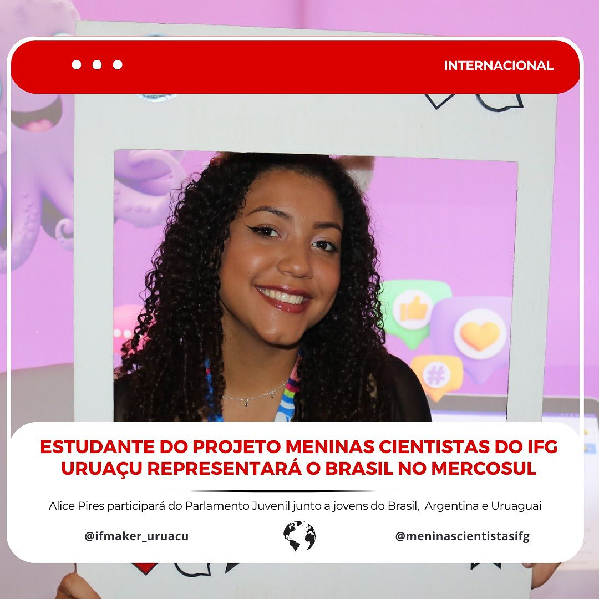
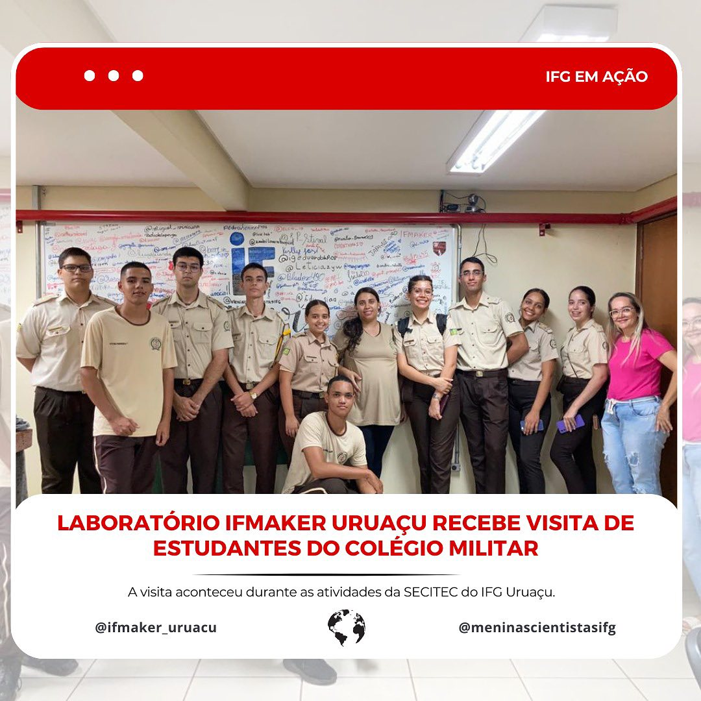
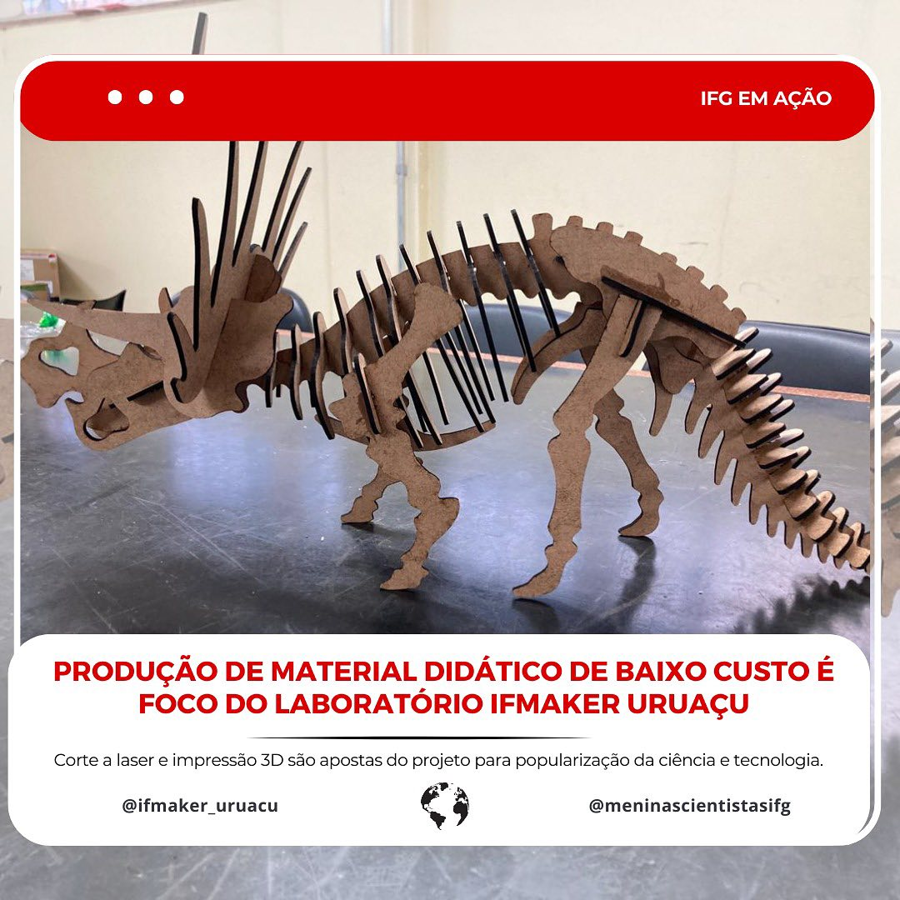
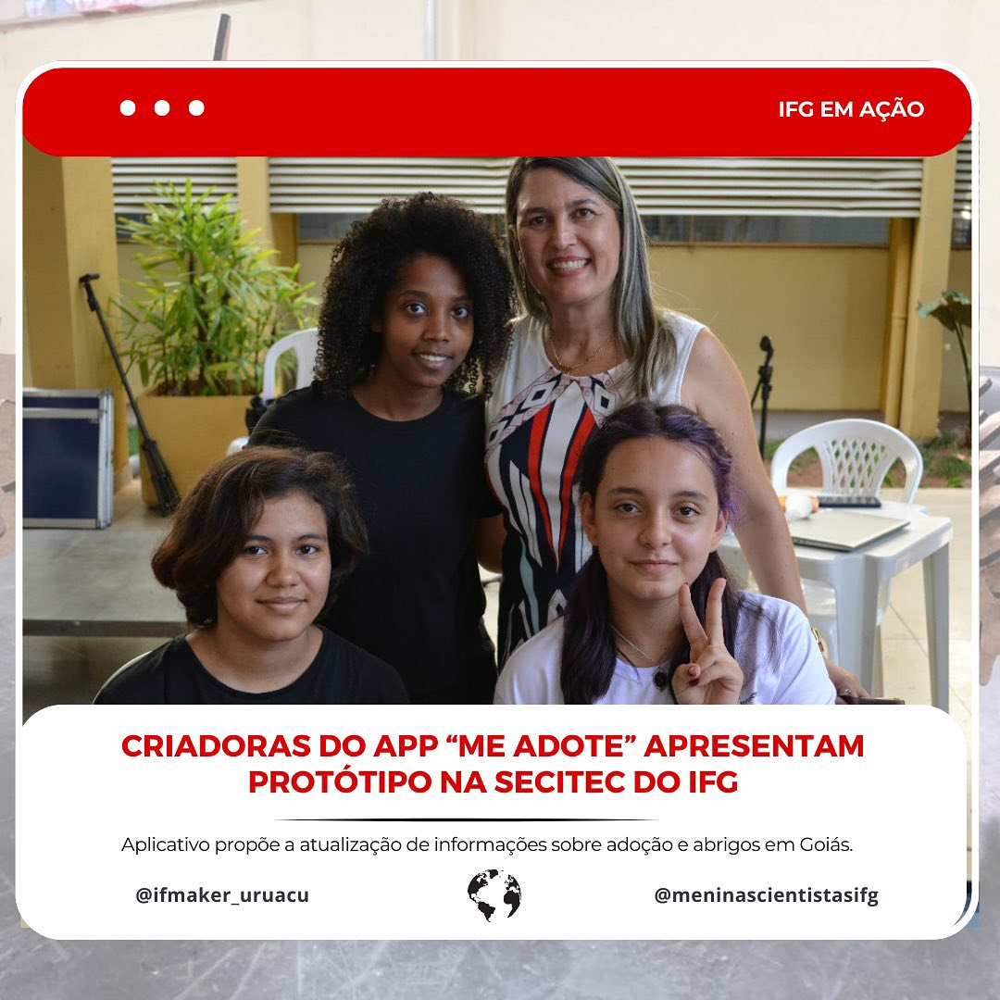

Destaque 1
Estádio Nacional de BrasÃlia Mané Garrincha
Destaque 2

Estádio Nacional de BrasÃlia Mané Garrincha
Destaque 3
👩🏽‍🔬 Alice, com todo seu potencial, nos representará nessa conquista internacional. 🉠Parabenizamos toda a equipe pela dedicação ao longo desses anos.
Destaque 4
No dia 24 de outubro recebemos a visita dos alunos do Colégio Estadual da PolÃcia Militar de Goiás Dona Maria Elisa da Silva, de Uruaçu - GO, no Laboratório IFMaker Uruaçu!
Destaque 5
🔬📚 **Inovação Educacional em Ação!** 🌟 No Laboratório IFMaker Uruaçu, a criatividade e a tecnologia se unem para pensar o ensino com a produção de material didático de baixo custo.
Destaque 6
📱🌟 **Criadoras do app Me Adote Apresentam Protótipo na Secitec do IFG!** 🌟📱